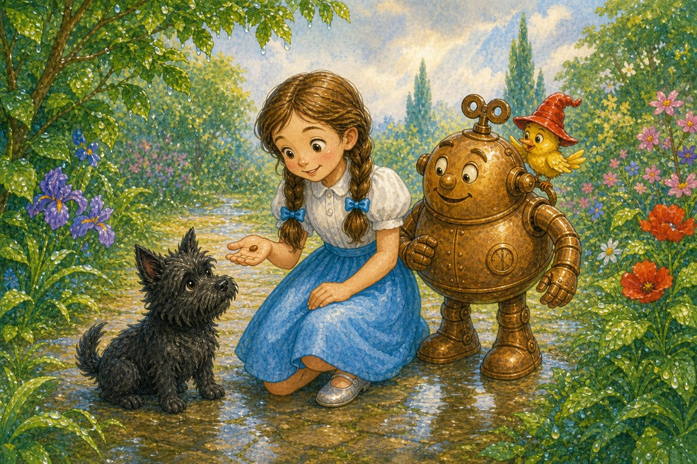
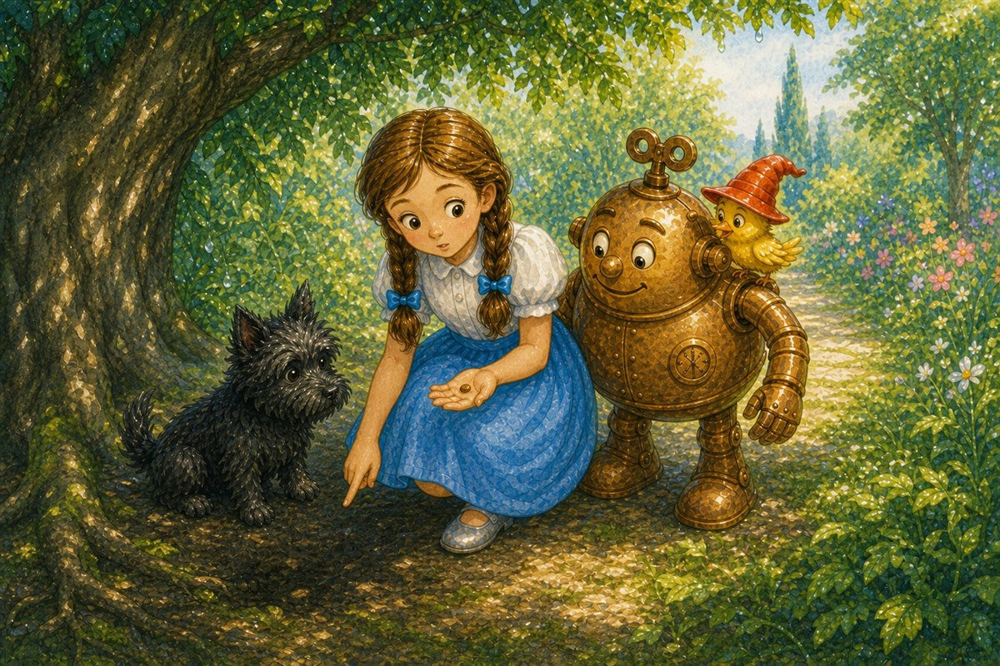
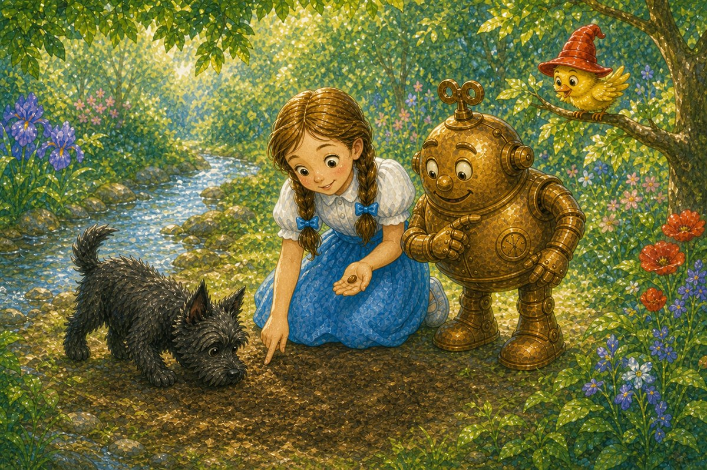
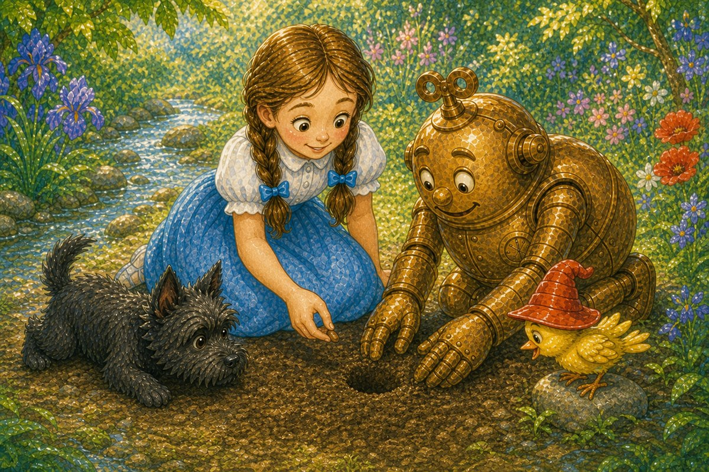
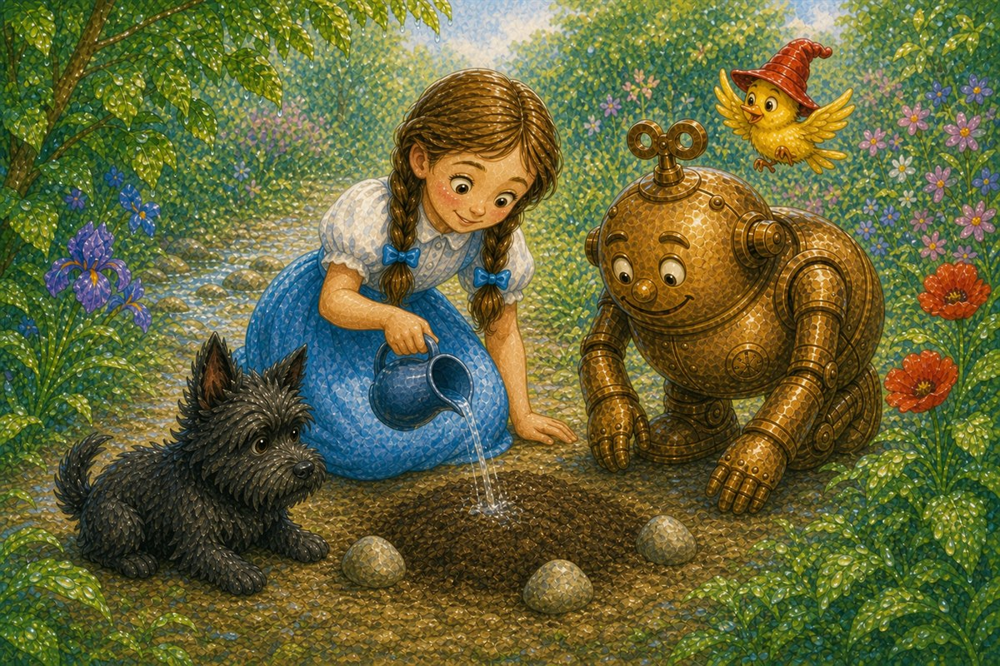
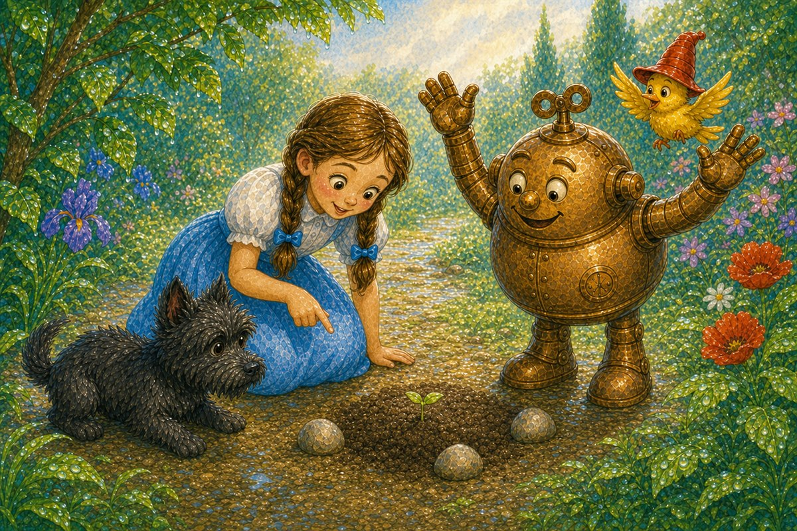
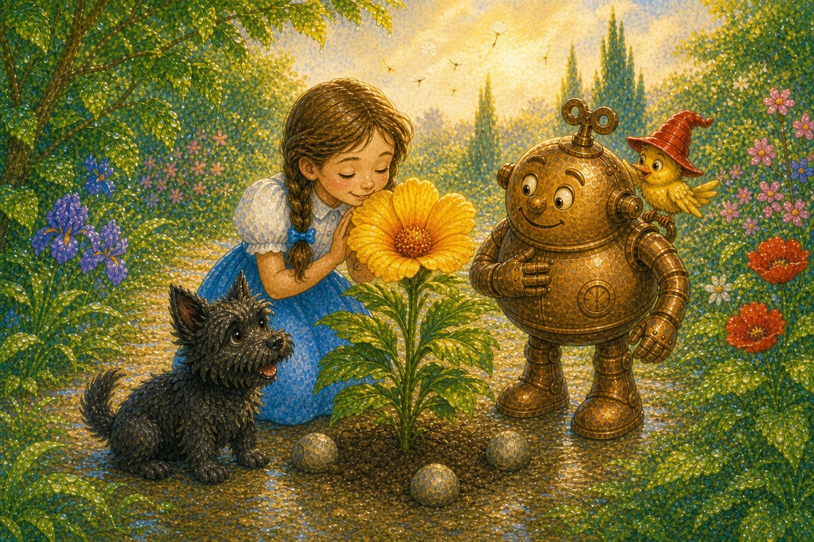

Pahina 1
Umulan noong gabi.
Ngayon, maliwanag na ang araw.
Nasa hardin sina Dorothy, Toto, at Tik-Tok.
May nakita si Dorothy sa ilalim ng dahon.
Isang bagong kuwento sa Lupain ng Oz
Basahin ang tatlong bagong pahina bawat araw. Bago magpatuloy, balikan muna ang mga pahinang nabasa na.

Umulan noong gabi.
Ngayon, maliwanag na ang araw.
Nasa hardin sina Dorothy, Toto, at Tik-Tok.
May nakita si Dorothy sa ilalim ng dahon.
Isang maliit na kayumangging binhi iyon.
“Binhi!” sabi ng ibon.
“Maaari itong maging halaman,” sabi ni Dorothy.
“Itatanim natin ito.”

Tumingin sila sa ilalim ng malaking puno.
Malambot ang lupa roon.
Pero madilim sa ilalim ng puno.
“Kailangan ng binhi ang liwanag,” sabi ni Dorothy.
Naglakad sila sa tabi ng daan.
Maliwanag doon.
Pero matigas at tuyo ang lupa.
“Hindi maganda rito,” sabi ni Tik-Tok.

Sa tabi ng maliit na ilog, huminto si Toto.
Malambot ang lupa.
May liwanag at may tubig.
“Magandang lugar ito!” sabi ni Dorothy.
“Dito natin itatanim ang binhi,” sabi ni Dorothy.
“Tama,” sabi ni Tik-Tok.
Tumahol si Toto.
Masaya rin si Toto.

Naghukay si Tik-Tok ng maliit na butas.
Maingat na inilagay ni Dorothy ang binhi sa loob.
Tinakpan niya ito ng lupa.
May dalang pitsel ng tubig si Dorothy.
Naglagay si Tik-Tok ng tatlong bato sa paligid.
“Para makita natin ang lugar,” sabi niya.

Dahan-dahang diniligan ni Dorothy ang lupa.
“Tubig para sa binhi,” sabi niya.
“At tiyaga mula sa atin,” sabi ng ibon.
Bumalik sila kinabukasan.
Wala pang halaman.
Bumalik sila sa sumunod na araw.
Wala pa rin.
Naghintay sila at inalagaan ang binhi.

Isang umaga, biglang tumahol si Toto.
May maliit na berdeng halaman sa gitna ng mga bato!
“Tumubo ang binhi!” sabi ni Dorothy.

Maraming araw ang lumipas.
Lumaki ang halaman at nagkaroon ng malaking dilaw na bulaklak.
Masaya silang lahat.
May mga bagong binhing dala ang hangin.
Pag-usapan natin